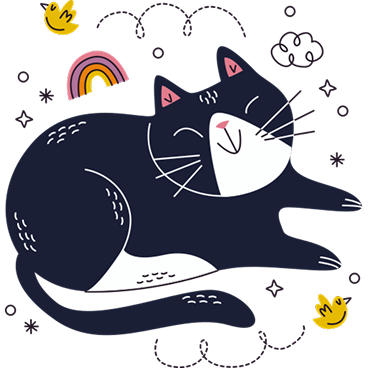
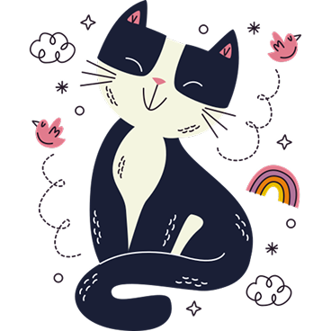

StepUp English
Узнай свой уровень!
Сделай следующий шаг!

Это не просто случайные вопросы. Наш тест построен на международных стандартах CEFR и адаптируется под ваши ответы. Он оценивает три ключевых параметра: грамматику, словарный запас и понимание текста.
Вместо расплывчатых ощущений «вроде что-то знаю» вы получите четкий результат: свой точный уровень от A1 до C2. А главное — поймете, над чем работать дальше.
Скорее проходи тест!
